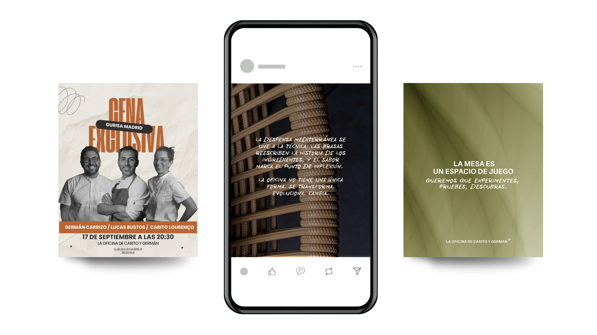
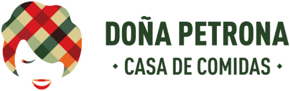
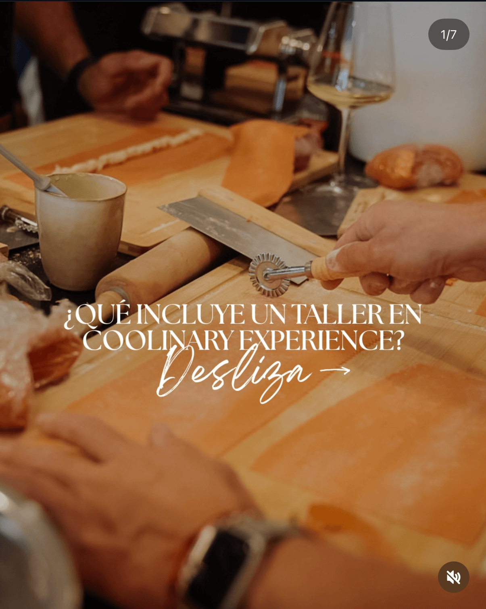
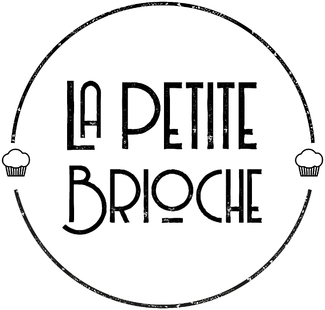

María del Valle
Pescetti
Soy diseñadora gráfica con 4 años de experiencia en comunicación visual, diseño de contenidos y desarrollo de campañas.
A lo largo de mi trayectoria he trabajado en proyectos de diferentes formatos, desde contenido digital y redes sociales hasta piezas gráficas, campañas, packaging y materiales impresos. Me interesa especialmente encontrar la manera de transformar una idea en una comunicación visual clara, atractiva y con personalidad.
Disfruto trabajar en equipo, involucrarme en cada proyecto y seguir aprendiendo nuevas herramientas y formas de diseñar. Actualmente estoy buscando nuevos desafíos que me permitan seguir creciendo y aportar mi mirada creativa a nuevos proyectos y marcas.
Comunicación visual
Campañas y contenido
Diseño gráfico y digital
Packaging y piezas impresas
Artes finales y producción
Illustrator · Photoshop · InDesign · Figma · Canva Pro · Procreate
IA & nuevas herramientasChatGPT · Claude · Gemini · Lovable
Español nativo · Inglés B2
Cada marca tiene un estilo.
Mi trabajo es hacerlo visible.


Fierro es alta cocina en 57 m² de Russafa: restaurante con una Estrella Michelin, construido sobre la memoria, el territorio y el huerto propio.
El trabajo sostiene esa filosofía y la traduce al lenguaje digital. Cada pieza parte de uno de los ejes de la marca —memoria y sabor, identidad en movimiento, territorio y huerto— y se resuelve con la misma economía de recursos que la cocina: tipografía sobria, silencio alrededor y una imagen que no explica: EVOCA. Diseño, copy, fotografía y edición de vídeo, con la coherencia de un sistema que se sostiene post a post.


Un bar de brasas en movimiento. El cuaderno abierto de Carito y Germán, reconocido por la Guía Michelin 2026. Llevo su identidad y su contenido digital.
Este contenido digital se creó a través de un sistema flexible: lettering a mano, retratos en blanco y negro, dorado y fuego. Pensado para sostener cartelería de eventos, colaboraciones y publicaciones diarias sin repetirse nunca.


Casa de comidas en Valencia: cocina de casa contada con sabor. Llevo el contenido diario y las piezas de temporada buscando el gesto cotidiano — la mano, el vapor, la mesa servida.
Menos gráfica y más temperatura: una retícula tranquila, tipografía con serifa y color heredado del mantel a cuadros de la marca.


Estrategia de marca y contenido para un ciclo de experiencias y talleres gastronómicos. Se define el tono, el sistema de piezas para anunciar y vender cada encuentro, y la cobertura de cada encuentro en tiempo real — un proyecto que se mueve fuera del restaurante, entre el evento y la comunidad.




Packaging
Juanita
Licor de Allá y de Acá
Rediseño de etiqueta para una bebida artesanal creada por Carito y Germán junto a Destilateca: yerba mate y naranja valenciana, la unión entre Argentina y Valencia. Llevando la identidad a un lenguaje moderno, minimalista y fresco, con el degradado nacido de la mezcla de sus ingredientes como recurso visual principal del sistema.
Marca · Etiqueta · Producto
Fierro X
Vino aniversario
Edición de etiqueta de vino por los diez años del restaurante. Se descarta el “10” convencional y se utiliza la cruz como marca del aniversario. Se ordena toda la etiqueta creando una sola imagen, tipografía pequeña, mucho negro y un plateado que da carácter de edición especial, para que el gesto se lea desde la mesa.
Concepto · Etiqueta · Arte final Edición limitada · Con Michelini y MufattoCreando marcas, dándole
voz, forma y personalidad propia.
Branding
Piero
Ronconi
Take away de pasta italiana en Valencia. El logotipo busca Italia sin folclore: sobriedad, elegancia y un trazo contemporáneo que funciona igual en una carta, en una caja o en un sello.
Logotipo · Aplicaciones · Papelería



La Petite
Brioche
Rediseño de identidad para una panadería artesanal: mantener el muffin reconocible del logo original, simplificar el símbolo y pasar a una tipografía más limpia y legible. Misma marca, lectura actual.
Rebranding · Aplicaciones · Papelería